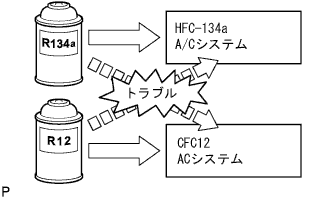
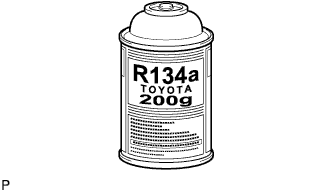
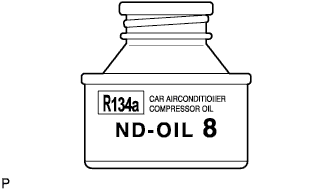
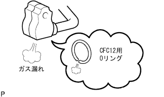
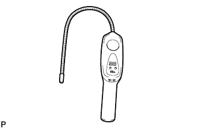
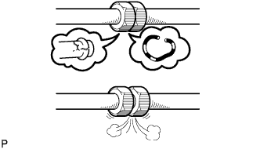

Refrigerant HFC-134a [R134a] Precautions |
 |
Compatibility
The parts that make up the refrigerant cycle, the compressor oil, etc. are not interchangeable between HFC-134a (R134a) systems and conventional R12 systems.
 |
Refrigerant HFC-134a (R134a)
Always use HFC-134a (R134a) refrigerant.
 |
Compressor Oil
Always use ND-OIL8 compressor oil.
Compressor oil for HFC-134a (R134a) is highly hygroscopic, so when A/C parts are removed, immediately seal them from the atmosphere with plugs, vinyl tape, etc.
Compressor oil for HFC-134a (R134a) has an adverse effect on acrylic resin, so do not splash the oil.
 |
O-rings
Always use O-rings for HFC-134a (R134a).
Precautions for Evacuation
When evacuating, attach a solenoid valve adapter to the vacuum pump for R12.
 |
Refrigerant Gas Leak Inspection
Inspect for refrigerant gas leaks using a halogen leak detector (ND part number 95146-00180).
Perform the refrigerant gas leak inspection with the ignition switch OFF.
If Refrigerant Gas Gets in the Eyes
Do not rub the eyes with a handkerchief or hands.
Seek treatment from an ophthalmologist.
Precautions for Handling Refrigerant Gas (Service Cans)
Do not heat service cans. If a service can is heated directly or placed in boiling water, the pressure inside the can becomes abnormally high and the can may burst. If a service can must be warmed, use warm water of 40°C or less.
Do not drop or strike service cans.
Do not open the high pressure valve of the manifold gauge while the engine is running. If the high pressure valve is opened while the engine is running, high pressure gas may flow back into the service can and cause it to burst.
Do not handle service cans near your face. Also, always wear protective goggles.
 |
Installing Pipes
Always use new O-rings.
Apply sufficient compressor oil (ND-OIL8) to the O-rings.
Route hose piping naturally, without twisting or forcibly bending it.
Do not use cotton work gloves, etc., as lint or other foreign matter on the O-rings can cause refrigerant gas leaks.